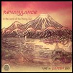

| Artist: | Renaissance |
| Title: | In The Land Of The Rising Sun |
| Label: | GEP |
| Length(s): | 51+54 minutes |
| Year(s) of release: | 2002 |
| Month of review: | [12/2002] |
| 1) | Carpet Of The Sun | 3.49 |
| 2) | Opening Out | 4.24 |
| 3) | Midas Man | 6.31 |
| 4) | Lady From Tuscany | 7.07 |
| 5) | Pearls Of Wisdom | 4.41 |
| 6) | Dear Landseer | 5.40 |
| 7) | Northern Lights | 4.21 |
| 8) | Moonlight Shadow | 4.08 |
| 9) | Precious One | 4.48 |
| 10) | Ananda | 5.42 |
Disc 2
| 1) | Mother Russia | 10.31 |
| 2) | Trip To The Fair | 11.53 |
| 4) | I Think Of You | 3.20 |
| 5) | Ashes Are Burning | 19.57 |